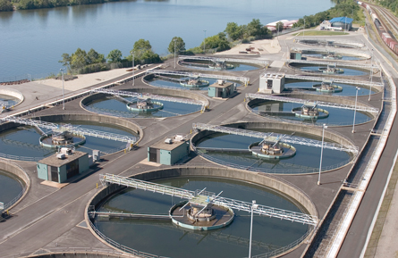

Module 4—Properties of Solutions
Lesson 4—Concentration I
 Get Focused
Get Focused

© Wade H. Massie/shutterstock
Now that you have considered where your drinking water comes from, how do you know if it is really safe to drink? Does it come from a well or a reservoir? How is it treated before it gets to your home? Who is accountable if something goes wrong with your tap water?
Various government agencies set safety standards that water treatment plants must adhere to. Since it is nearly impossible to remove all dissolved substances from a solution, maximum allowable concentrations are in place to protect those who drink the water.
In this lesson you will learn how concentration can be expressed using a variety of units. You will then use this knowledge to gain a better understanding of the chemistry associated with water quality.
Essential Question
- How can the concentration of solute in a solution be expressed?
 Module 4: Lesson 4 Assignment
Module 4: Lesson 4 Assignment
You will complete the Module 4 Assignment 4 in this lesson.
Remember that the questions that are not marked by the teacher provide you with the practice and feedback that you need to successfully complete this course. You should respond to all the questions and place those answers in your course folder.